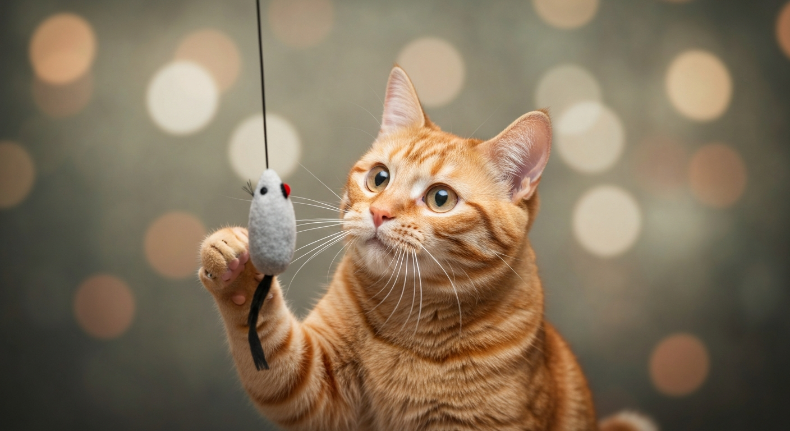

貓眼預言：一隻橘貓，一座命運羅盤

第 1 篇
第一章：一碗罐頭，兩個預言
你相信嗎？我的貓，橘子，牠能預知未來。聽起來荒謬，對吧？就像在台北的喧囂中，突然有人告訴你，他見過時間旅行者。但這一切，都從一碗雞肉罐頭開始。那天早上，我一如往常地準備橘子的早餐。牠蹲在廚房門口，尾巴輕輕掃動，眼神卻異常地深邃，直勾勾地望著我手上的湯匙。我正準備將罐頭倒入碗中，牠突然發出了一聲罕見的低吼，隨後，用前爪撥開了碗。那不是撒嬌，而是一種堅決的阻擋。
「橘子，怎麼了？」我彎下腰，疑惑地看著牠。牠只是靜靜地看著我，然後輕輕地推了推我手中的罐頭。那一刻，我感到一股莫名的寒意。我從來沒想過，一隻貓的舉動，會讓我重新審視「預感」這個詞。幾分鐘後，手機傳來緊急警報：瓦斯外洩，同棟大樓的住戶被要求緊急撤離。而我，因為橘子的『干預』，還未來得及接觸到那個有問題的罐頭。你可能會說，那只是巧合，貓咪對食物的挑剔罷了。但更詭異的是，牠在往後的日子裡，總是在關鍵時刻，以牠獨特的方式，『預告』一些微不足道，卻又精準得令人發毛的事件。牠彷彿是我的個人時光導遊，用牠的爪子和眼神，輕輕撥開時間的迷霧。那些預言，從來不是宏大的災難，卻總是關於我自己的選擇與困境。而我，這個習慣用邏輯和數據來構築世界的人，開始在牠琥珀色的眼眸中，尋找答案。
「橘子，怎麼了？」我彎下腰，疑惑地看著牠。牠只是靜靜地看著我，然後輕輕地推了推我手中的罐頭。那一刻，我感到一股莫名的寒意。我從來沒想過，一隻貓的舉動，會讓我重新審視「預感」這個詞。幾分鐘後，手機傳來緊急警報：瓦斯外洩，同棟大樓的住戶被要求緊急撤離。而我，因為橘子的『干預』，還未來得及接觸到那個有問題的罐頭。你可能會說，那只是巧合，貓咪對食物的挑剔罷了。但更詭異的是，牠在往後的日子裡，總是在關鍵時刻，以牠獨特的方式，『預告』一些微不足道，卻又精準得令人發毛的事件。牠彷彿是我的個人時光導遊，用牠的爪子和眼神，輕輕撥開時間的迷霧。那些預言，從來不是宏大的災難，卻總是關於我自己的選擇與困境。而我，這個習慣用邏輯和數據來構築世界的人，開始在牠琥珀色的眼眸中，尋找答案。
💬 你以為的巧合，或許只是宇宙對你低語的開端。
第 2 篇
第二章：迷路的選擇，指路的貓
橘子的「預言」從不直接，牠不說：「小心腳下有坑。」牠只是會在我要踏出門前，突然衝到我腳邊，用身體將我輕輕絆倒。起初我會責罵牠，但幾次之後，我發現被絆倒的地方，往往有一塊鬆動的地磚，或是一灘未乾的水漬。這讓我不得不重新思考，牠究竟是在阻止我，還是在引導我？
有一次，我在面臨一個重要的職涯選擇時，更是體驗到牠的「智慧」。那是一個高薪卻可能犧牲個人生活的機會。我將兩份合約攤在桌上，陷入兩難。橘子跳上桌，先是聞了聞那份誘人的高薪合約，然後用牠的爪子，輕輕地、緩緩地，將另一份看似平淡卻更符合我初心的合約，推到了我的面前。牠的動作沉穩而堅決，像一位閱盡世事的智者，不發一語，卻給出了最明確的指示。我從來沒想過，一隻貓會是我的生涯顧問。我們習慣將決策的重量壓在理性與經驗的天秤上，卻常常忽略了直覺，或是那些非言語的「徵兆」。橘子不是在替我做選擇，牠只是透過牠的行為，讓我看見了心中早已存在的答案，那個被我理性壓抑，卻不斷發出微弱訊號的「真實自我」。就像《小王子》中的狐狸，牠馴服了小王子，也馴服了我對世界的僵化理解。牠提醒我，有些答案，其實早已寫在心底，只是我們太習慣去追逐那些閃亮的外殼，而忘記了聆聽內在的聲音。那晚，我做出了選擇，而橘子只是在我身旁，輕輕地打著呼嚕，彷彿在說：「你看，這不是很簡單嗎？」
有一次，我在面臨一個重要的職涯選擇時，更是體驗到牠的「智慧」。那是一個高薪卻可能犧牲個人生活的機會。我將兩份合約攤在桌上，陷入兩難。橘子跳上桌，先是聞了聞那份誘人的高薪合約，然後用牠的爪子，輕輕地、緩緩地，將另一份看似平淡卻更符合我初心的合約，推到了我的面前。牠的動作沉穩而堅決，像一位閱盡世事的智者，不發一語，卻給出了最明確的指示。我從來沒想過，一隻貓會是我的生涯顧問。我們習慣將決策的重量壓在理性與經驗的天秤上，卻常常忽略了直覺，或是那些非言語的「徵兆」。橘子不是在替我做選擇，牠只是透過牠的行為，讓我看見了心中早已存在的答案，那個被我理性壓抑，卻不斷發出微弱訊號的「真實自我」。就像《小王子》中的狐狸，牠馴服了小王子，也馴服了我對世界的僵化理解。牠提醒我，有些答案，其實早已寫在心底，只是我們太習慣去追逐那些閃亮的外殼，而忘記了聆聽內在的聲音。那晚，我做出了選擇，而橘子只是在我身旁，輕輕地打著呼嚕，彷彿在說：「你看，這不是很簡單嗎？」
💬 當理性與直覺拉扯，貓會讓你看到心底的答案。
第 3 篇
第三章：時間迴廊，貓的啟示錄
橘子的預言，從來不是關於彩券號碼或股票漲跌。牠關注的，是那些微不足道的瞬間，卻又足以改變我心境的轉折點。這些預言，讓我開始在日常中尋找意義，而非等待戲劇性的事件。有一次，我對一個遲遲未回覆的客戶感到焦慮，橘子卻只是靜靜地坐在窗邊，凝視著遠方的一隻麻雀。牠的眼神深邃而平靜，彷彿在說，有些事情，急不來。第二天，客戶的訊息終於傳來，並帶著意想不到的好消息。我才意識到，牠並非預知結果，而是預知我過度焦慮的情緒，並用牠的平靜來「校準」我。
我們常常被生活推著走，習慣性地將注意力投向未來或過去，被焦慮和懊悔綁架，卻忘了好好活在當下。橘子，這隻看似普通的橘貓，卻像一位靜默的禪師，用牠的存在，提醒我生命的本質。牠不是預言家，牠是「當下」的守護者。牠的預知，其實是讓我看清了自己。看清那些因執著而產生的盲點，看清那些因恐懼而忽略的機會。牠讓我明白，真正的預知，並非知道未來會發生什麼，而是理解自己當下的選擇，將如何塑造未來。因為未來從來不是既定的，它是一個動態的、由每一個當下累積而成的結果。就像《牧羊少年奇幻之旅》中，寶藏其實就在腳下，只是主角走了很遠才明白。橘子就是我的寶藏，牠讓我學會，最重要的預言，其實是自己對生命的洞察與選擇。而當我終於懂得聆聽內心的聲音，我才發現，我才是自己命運，最精準的預言家。
我們常常被生活推著走，習慣性地將注意力投向未來或過去，被焦慮和懊悔綁架，卻忘了好好活在當下。橘子，這隻看似普通的橘貓，卻像一位靜默的禪師，用牠的存在，提醒我生命的本質。牠不是預言家，牠是「當下」的守護者。牠的預知，其實是讓我看清了自己。看清那些因執著而產生的盲點，看清那些因恐懼而忽略的機會。牠讓我明白，真正的預知，並非知道未來會發生什麼，而是理解自己當下的選擇，將如何塑造未來。因為未來從來不是既定的，它是一個動態的、由每一個當下累積而成的結果。就像《牧羊少年奇幻之旅》中，寶藏其實就在腳下，只是主角走了很遠才明白。橘子就是我的寶藏，牠讓我學會，最重要的預言，其實是自己對生命的洞察與選擇。而當我終於懂得聆聽內心的聲音，我才發現，我才是自己命運，最精準的預言家。
💬 未來從來不是既定的，它只是你每個當下的累積結果。